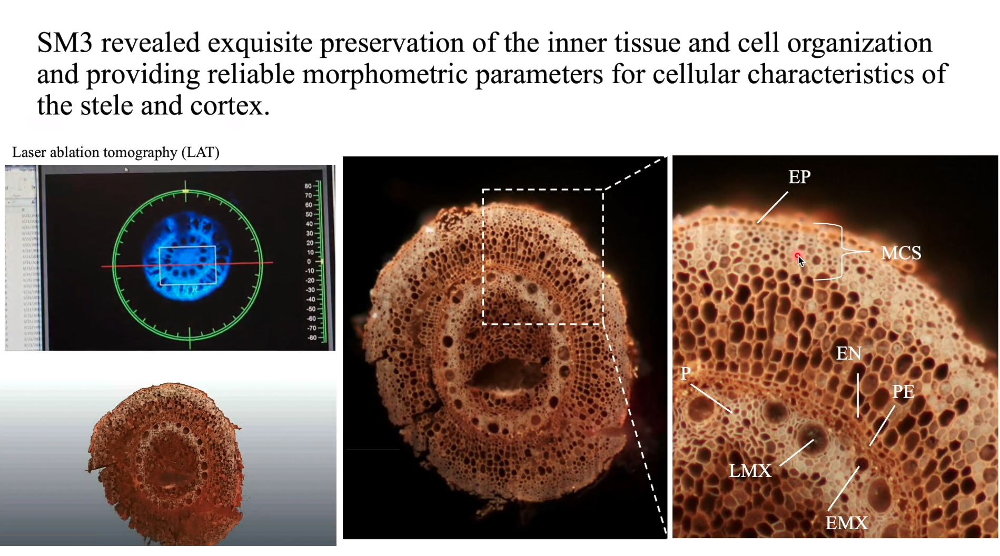

About
I’m a Mexican Ph.D. student devoted to understand the physiological functions of root traits in maize and the effect domestication on them. I use greenhouse, field and modeling approaches in order to dissect the components of maize adaptation to different environments.

Sampling maize roots
I studied a master in Plant Biotechnology at LANGEBIO Cinvestav where I dissected the root anatomy and architecture of 5000-year-old root systems of maize specimens coming from the San Marcos cave at Tehuacan Valley. I performed this research in the Paleogenomics Lab and Apomixis Lab at LANGEBIO, and in collaboration with the Roots Lab at Penn State University. We find evidences that the roots traits were domesticated gradually in maize. Further information can be found here.

Ancient roots from Tehuacan Valley Article
I also participated in the 11th Symposium of the International Society of Root Research

Ivan Lopez-Valdivia participating at the Sexto Congreso Internacional PCNT Lecture